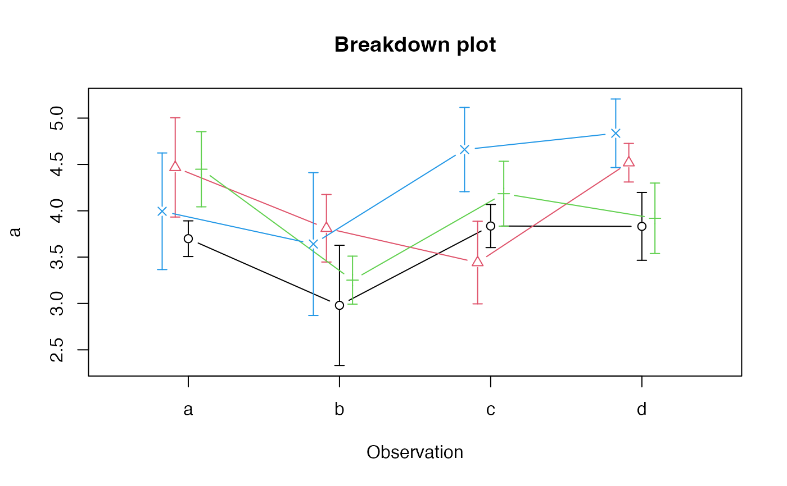
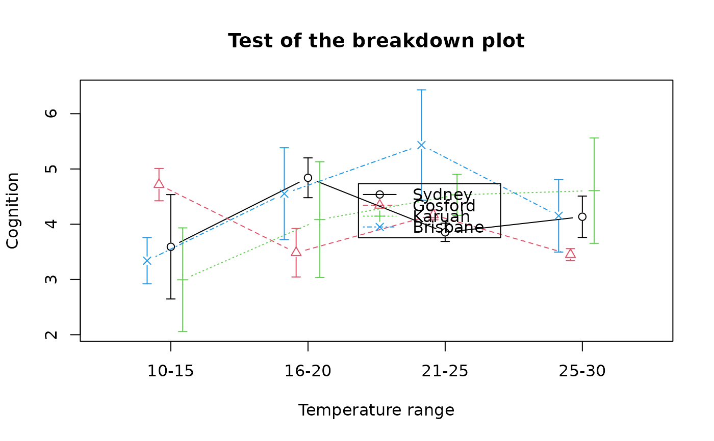

A point/line plotting routine
brkdn.plot.RdDisplay a point/line plot of breakdowns of one or more variables.
Usage
brkdn.plot(vars,groups=NULL,obs=NULL,data,mct="mean",md="std.error",
stagger=NULL,dispbar=TRUE,main="Breakdown plot",xlab=NULL,ylab=NULL,xaxlab=NA,
ylim=NA,type="b",pch=1,lty=1,col=par("fg"),staxx=FALSE,yat=NULL,...)Arguments
- vars
The names or indices of one or more columns in a data frame. The columns must contain numeric data. If only one variable is to be broken down, vars can be a formula.
- groups
The name or index of a column in a data frame that classifies the values in vars into different, usually fixed effect, levels.
- obs
The name or index of a column in a data frame that classifies the values in vars into different, usually random effect, levels.
- data
The data frame.
- mct
The measure of central tendency to calculate for each group.
- md
The measure of dispersion to calculate, NA for none.
- stagger
The amount to offset the successive values at each horizontal position as a proportion of the width of the plot. The calculated default is usually adequate. Pass zero for none.
- dispbar
Whether to display the measures of dispersion as bars.
- main
The title at the top of the plot.
- xlab,ylab
The labels for the X and Y axes respectively. There are defaults, but they are basic.
- xaxlab
Optional labels for the horizontal axis ticks.
- ylim
Optional vertical limits for the plot.
- type
Whether to plot symbols, lines or both (as in plot).
- pch
Symbol(s) to plot.
- lty
Line type(s) to plot.
- col
Color(s) for the symbols and lines.
- staxx
Whether to call staxlab to display the X axis labels.
- yat
Optional y axis tick positions.
- ...
additional arguments passed to plot.
Value
A list of two matrices of dimension length(levels(groups)) by length(levels(obs)). The first contains the measures of central tendency calculated and its name is the name of the function passed as mct. The second contains the measures of dispersion and its name is the name of the function passed as md.
If both groups and obs are not NULL, the rows of each matrix will be the groups and the columns the obs. If obs is NULL, the rows will be the groups and the columns the vars. If groups is NULL, the rows will be the vars and the columns the obs. That is, if vars has more than one element, if obs is NULL, the elements of vars will be considered to represent observations, while if groups is NULL, they will be considered to represent groups. At least one of groups and obs must be not NULL or there is no point in using brkdn.plot.
Details
brkdn.plot displays a plot useful for visualizing the breakdown of a response measure by two factors, or more than one response measure by either a factor representing something like levels of treatment (groups) or something like repeated observations (obs). For example, if observations are made at different times on data objects that receive different treatments, the groups factor will display the measures of central tendency as points/lines with the same color, symbol and line type, while the obs factor will be represented as horizontal positions on the plot. If obs is numeric, its unique values will be used as the positions, if not, 1 to the number of unique values. This is a common way of representing changes over time intervals for experimental groups.
If only one numeric variable is to be broken down, vars may be a formula like var~groups+obs. The position of the two factors to break down the variable is fixed - the second term will be interpreted as "groups" and the third, if present, will be interpreted as "obs".
Examples
test.df<-data.frame(a=rnorm(80)+4,b=rnorm(80)+4,c=rep(LETTERS[1:4],each=20),
d=rep(rep(letters[1:4],each=4),5))
# first use the default values
brkdn.plot("a","c","d",test.df,pch=1:4,col=1:4)

#> $mean
#> [,1] [,2] [,3] [,4]
#> [1,] 3.699047 2.979673 3.835690 3.831803
#> [2,] 4.468245 3.811462 3.441621 4.518820
#> [3,] 4.448392 3.251773 4.184449 3.919098
#> [4,] 3.994852 3.641499 4.660812 4.836524
#>
#> $std.error
#> [,1] [,2] [,3] [,4]
#> [1,] 0.1923569 0.6483281 0.2327485 0.3658918
#> [2,] 0.5357199 0.3643665 0.4458449 0.2081409
#> [3,] 0.4055370 0.2588084 0.3498931 0.3801542
#> [4,] 0.6290630 0.7705355 0.4545133 0.3695867
#>
# now jazz it up a bit using medians and median absolute deviations
# and some enhancements
bp<-brkdn.plot(a~c+d,data=test.df,main="Test of the breakdown plot",
mct="median",md="mad",xlab="Temperature range", ylab="Cognition",
xaxlab=c("10-15","16-20","21-25","25-30"),pch=1:4,lty=1:4,col=1:4)
es<-emptyspace(bp)
legend(es,legend=c("Sydney","Gosford","Karuah","Brisbane"),pch=1:4,
col=1:4,lty=1:4,xjust=0.5,yjust=0.5)
